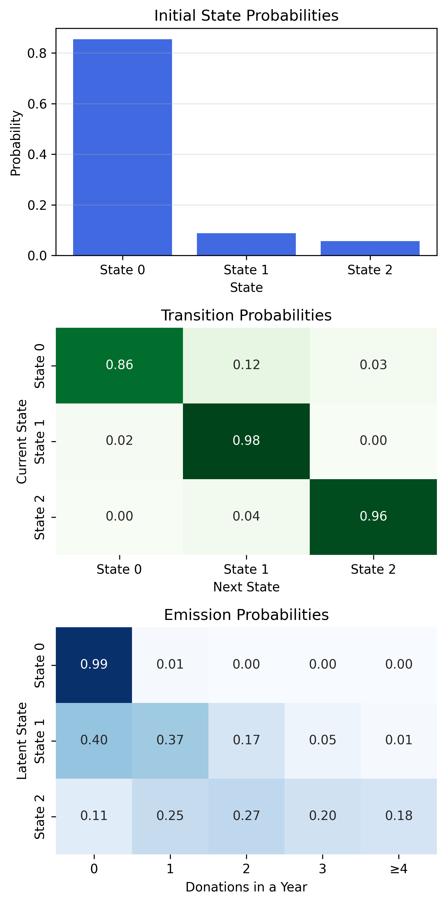
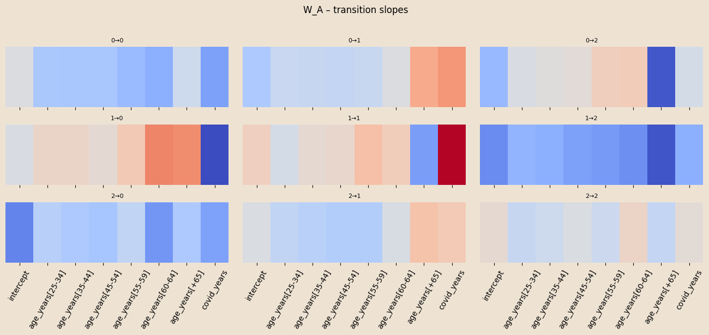
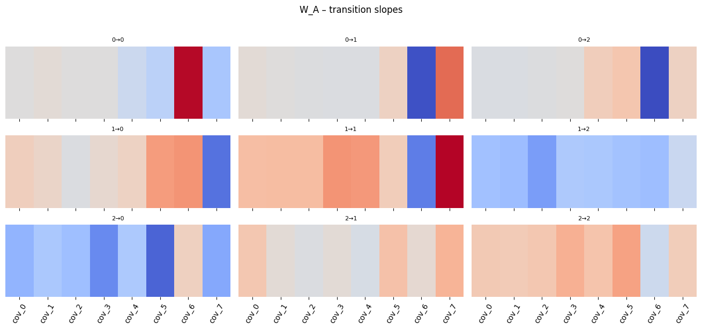

Bayesian HMM-GLMs
Prediction of the propensity to donate in the blood donors in Trieste
Erik De Luca
Dipartimento di Scienze Economiche, Aziendali, Matematiche e Statistiche
Tommaso Piscitelli
Dipartimento di Informatica, Matematica e Geoscienze
Summary
About the data
Bayesian HMM
Number of latent states
Viterbi algorithm
GLM on emissions
Check of the model
Dashboard
About the Data
What we have
- A longitudinal panel of 9,000+ unique blood donors in Trieste
- Annual counts of donations per donor (0–4 per year), spanning 2009–2023
Where it comes from
- ASUGI transfusion service operational registers
- Fully anonymised data; available covariates: gender (M/F) and year of birth
Objective
- Build a predictive model for future donation propensity and counts
- Discover latent behavioural profiles and common temporal patterns
- Quantify the impact of age, gender, and shocks (e.g., COVID-19) on dynamics
Limitations
- Sparse covariates (only gender and birth year)
- No clinical or socio-economic info
Bayesian HMM
Initial-state distribution (\(\pi\)):
\(\pi_{\text{base}}\sim\mathrm{Dirichlet}(\boldsymbol{\alpha}_{\pi})\)
\[ \Pr(z_{n,0}=k\mid x^{\pi}_n)= \operatorname{softmax}_k\!\bigl( \log\pi_{\text{base},k}+W_{\pi,k}\cdot x^{\pi}_n \bigr) \]
\(x^{\pi}_n = (\text{birth_year_norm},\;\text{gender_code})\in\mathbb R^{2}\)
Transition dynamics (\(A\))
\(A_{\text{base}}[k,\cdot]\sim\mathrm{Dirichlet}(\boldsymbol{\alpha}_{A_k})\)
\[ \Pr(z_{n,t}=j\mid z_{n,t-1}=k,\;x^{A}_{n,t})= \operatorname{softmax}_j\!\bigl( \log A_{\text{base},kj}+W_{A,kj}\cdot x^{A}_{n,t} \bigr). \]
\(x^{A}_{n,t} = (\text{ages_norm},\;\text{covid_years})\in\mathbb R^{2}\)
Emission (\(\lambda\)):
\(\lambda_k\sim\mathrm{Gamma}(2,1)\) for \(k=0,1,2\)
\[ y_{n,t}\mid z_{n,t}=k\sim\text{Poisson}(\lambda_k) \]
Results
Number of Latent States
Goal: estimate model evidence (Laplace approximation) for differnt values of number of states
\[ \log p(X) \;\approx\; \log p\!\left(X \mid \hat{\theta}_{\text{MAP}}\right) \;+\; \text{Occam factor} \]
\[ \text{Occam factor} \;\approx\; -\tfrac{1}{2} M \, \ln N \]
- Forward algorithm per valutare la likeliood function corrispondente ai parametri appresi
$$ (z_1) ;=; p(z_1), p(x_1 z_1)
(z_n) ;=; p(x_n z_n); {z{n-1}} (z_{n-1}), p(z_n z_{n-1}) n = 2,, N. $$
Diagnostics
Viterbi Algorithm
- Goal: for each donor find the MAP latent path \(z_{0:T}^\ast\).
- Plug-in parameters (posterior means)
\[ \hat\pi_k = \frac{\alpha_{\pi,k}}{\sum_{j}\alpha_{\pi,j}},\qquad \hat A_{kj} = \frac{\alpha_{A_{k j}}}{\sum_{j'}\alpha_{A_{k j'}}},\qquad \hat\lambda_k = \frac{\alpha_k}{\beta_k} \]
- Dynamic programming
Initial step
\[ \delta_0(k)=\log\hat\pi_k+\log\text{Poisson}(y_0\mid\hat\lambda_k) \]Recursion for \(t=1,\dots,T\)
\[ \delta_t(j)=\max_k\bigl[\delta_{t-1}(k)+\log\hat A_{k j}\bigr] +\log\text{Poisson}(y_t\mid\hat\lambda_j), \] \[ \psi_t(j)=\arg\max_k\bigl[\delta_{t-1}(k)+\log\hat A_{k j}\bigr] \]Back-tracking
Start with \(z_T^\ast=\arg\max_k\delta_T(k)\), then \(z_{t-1}^\ast=\psi_t(z_t^\ast)\) for \(t=T,\dots,1\).
Forward filtering
# Forward filtering to get alpha_T for prediction
log_alpha = torch.empty(1, T_hist, K, dtype=torch.float32)
log_alpha[:, 0] = log_pi + emis_log[:, 0]
for t in range(1, T_hist):
x_t = xA_te[:, t, :]
logits = logA0.unsqueeze(0) + (W_A_t.unsqueeze(0) * x_t[:, None, None, :]).sum(-1) # (1,K,K)
log_A = logits - torch.logsumexp(logits, dim=2, keepdim=True)
log_alpha[:, t] = torch.logsumexp(log_alpha[:, t - 1].unsqueeze(2) + log_A, dim=1) + emis_log[:, t]
alpha_T = (log_alpha[:, -1] - torch.logsumexp(log_alpha[:, -1], dim=1, keepdim=True)).exp().cpu().numpy()[0] # (K,)
# Next-year transition and emission
logits_next = np.log(A_base + 1e-30) + np.tensordot(W_A, x_A_next, axes=([2], [0])) # (K,K)
A_next = _softmax_np(logits_next) # (K,K)
p_next = alpha_T @ A_next # (K,)
lam_next = np.exp(beta_em[:, 0] + (beta_em[:, 1:] @ x_em_next)) # (K,)
# Predictive mixture for next year
expected_next = float((p_next * lam_next).sum())
p0 = float((p_next * np.exp(-lam_next)).sum())
prob_donate_next = 1.0 - p0
from scipy.stats import poisson as _po
pmf0k = np.array([(p_next * _po.pmf(k, lam_next)).sum() for k in range(max_k + 1)], dtype=float)
tail = float(max(0.0, 1.0 - pmf0k.sum()))
pmf_dict = {str(k): float(pmf0k[k]) for k in range(max_k + 1)}
pmf_dict[f">={max_k+1}"] = tailGLM on emissions
Priors: the same of the Bayesian HMM.
Slope parameters to learn
\(W_\pi \in \mathbb{R}^{K\times 2}\) (
birth_year_norm,gender_code)\(W_A \in \mathbb{R}^{K\times K \times 8}\) (seven age-bin dummies
ages_norm,covid_years)\(\beta_{em} \in \mathbb{R}^{K \times (1+9)}\) (
intercept,gender_code_tile,ages_norm,covid_years)
Initial-state distribution \[ \Pr(z_{n,0}=k \mid x^\pi_n) = \mathrm{softmax}_k \big( \log \pi_{\text{base},k} + W_{\pi,k} \cdot x^\pi_n \big) \]
Transition distribution \[ \Pr(z_{n,t}=j \mid z_{n,t-1}=k, \ x^A_{n,t}) = \mathrm{softmax}_j \big( \log A_{\text{base},kj} + W_{A,kj} \cdot x^A_{n,t} \big) \]
Emission (one Poisson GLM for each latent state) \[ y_{n,t} \mid z_{n,t}=k \sim \mathrm{Poisson}\Big( \exp\Big( \beta_{em,k,0} + \sum_{m=1}^{9} \beta_{em,k,m} \cdot x^{em}_{n,t,m} \Big) \Big) \]
Results
 {fig-align=“center”, width=“100”}
{fig-align=“center”, width=“100”}
Coefficients on \(\pi\)

Coefficients on \(A\)

\(\beta\) coefficients

Testing
Train and Test data:
Split Stratificato
Si divide il dataset in train (90%) e test (10%).
La divisione non è casuale pura → si usa stratificazione.
Le strata = genere × fascia d’età (al tempo 0).
In ogni gruppo si prende ~10% per il test.
Così train e test hanno distribuzioni simili di genere ed età → test set rappresentativo.
HMM Forward Prediction with GLM Emission
Obiettivo della funzione:
-(‘y_pred_hmm’) → numero atteso di donazioni per ciascun individuo nell’anno successivo.→ distribuzione sugli stati latenti alla fine dell’anno osservato, usata per calcolare la predizione. $$
- Inizializzazione della distribuzione sugli stati:
\[ \alpha^{(0)}_n = \text{softmax}\Big(\log \pi_{\text{base}} + x^{(n)}_{\pi} W_\pi^\top \Big), \quad n = 1,\dots,N \]
Propagazione in avanti per step futuri: \[ A^{(n)}_t = \text{softmax}_\text{row}\Big( \log A_{\text{base}} + W_A \cdot x^{(n)}_{A,t} \Big), \quad \alpha^{(t+1)}_n = \alpha^{(t)}_n \, A^{(n)}_t \]
Emissione Poisson (GLM per stato): \[ \eta^{(n)}_k = \beta_{k0} + \mathbf{x}^{(n)}_{\text{em},t} \cdot \beta_{k,1:}, \quad \lambda^{(n)}_k = \exp(\eta^{(n)}_k) \]
Predizione del conteggio atteso: \[ \mathbb{E}[y^{(n)}_{t+h}] = \sum_{k=1}^K \alpha^{(t+h)}_{n,k} \, \lambda^{(n)}_k \]
Risultato finale della funzione: \[ \text{y\_expected} = \big(\mathbb{E}[y^{(1)}_{t+h}], \dots, \mathbb{E}[y^{(N)}_{t+h}]\big), \quad \text{state\_dist} = \alpha^{(t+h)}_n \text{ per ogni individuo } n \]
Predicting Next-Year Donations with HMM + Covariates
Obiettivo:
Predire la distribuzione di donazioni del prossimo anno per un donatore e decodificare gli stati latenti passati usando un Hidden Markov Model (HMM) con emissioni Poisson dipendenti da covariate (GLM).
Input principali
birth_year,gender
- Storico donazioni:
history_years,history_counts
- Covariate opzionali per emissioni (
x_em_builder) e transizioni (x_A_builder)
- Anni COVID per indicatore:
covid_years
Passaggi principali
- Preparazione dati e covariate
- Normalizzazione di età e anno di nascita
- Costruzione delle covariate per stati iniziali (
x_pi), transizioni (x_A) ed emissioni (x_em)
- Emissioni Poisson
- Calcolo delle probabilità logaritmiche delle osservazioni date gli stati (
emis_log)
- Dimensione risultante:
(N=1, T, K)
- Calcolo delle probabilità logaritmiche delle osservazioni date gli stati (
- Inizializzazione stati latenti
- Logits iniziali
log_pi0combinando priorpi_basee covariate iniziali - Normalizzazione con
log_softmax→ probabilità inizialilog_pi
- Logits iniziali
- Decodifica Viterbi
- Ricerca del percorso di stati più probabile (
v_path)
- Backpointers
psiper tracciare i percorsi ottimali
- Ricerca del percorso di stati più probabile (
- Forward Filtering
- Calcolo α_t (probabilità marginale di ogni stato al tempo t)
- Normalizzazione → distribuzione sugli stati all’ultimo anno osservato (
alpha_T)
- Calcolo α_t (probabilità marginale di ogni stato al tempo t)
- Predizione prossimo anno
- Transizione verso l’anno successivo usando
A_next
- Emissione Poisson predittiva combinata con probabilità sugli stati
- Calcolo:
- Probabilità di ciascuno stato
p_next - Numero atteso di donazioni
expected_next - Probabilità di almeno una donazione
prob_donate_next - PMF fino a
max_kcon tail>= max_k+1
- Probabilità di ciascuno stato
- Transizione verso l’anno successivo usando
Output
- Sequenza stati passati:
viterbi_states - Distribuzione di probabilità del prossimo anno:
next_state_probs - Predizione numerica:
expected_nextprob_donate_nextpmf_next(dizionario 0..max_k + tail)
Dashboard
Backup
Model in Pyro
# ───────────────────────────────────────────────────────────────
# Poisson-HMM con Dirichlet asimmetriche
# ───────────────────────────────────────────────────────────────
import torch, pyro, pyro.distributions as dist
from pyro.infer import SVI, TraceEnum_ELBO, config_enumerate
from pyro.optim import Adam
K = 3
C_pi = 2 # birth_year_norm , gender_code
C_A = 2 # ages_norm , covid_years
# a priori asimmetriche
alpha_pi = torch.tensor([5., 2., 1.])
alpha_A = torch.tensor([[6.,1.,1.],
[1.,6.,1.],
[1.,1.,6.]])
@config_enumerate
def model(obs, x_pi, x_A):
N, T = obs.shape
# 1) Poisson rates
rates = pyro.param("rates",
0.5*torch.ones(K),
constraint=dist.constraints.positive)
# 2) Dirichlet priors
pi_base = pyro.sample("pi_base", dist.Dirichlet(alpha_pi))
A_base = pyro.sample("A_base",
dist.Dirichlet(alpha_A).to_event(1)) # shape (K,K)
log_pi_base = pi_base.log() # (K,)
log_A_base = A_base.log() # (K,K)
# 3) slope coefficients for covariates
W_pi = pyro.param("W_pi", torch.zeros(K, C_pi))
W_A = pyro.param("W_A", torch.zeros(K, K, C_A))
with pyro.plate("seqs", N):
# T=0
logits0 = log_pi_base + (x_pi @ W_pi.T) # (N,K)
z_prev = pyro.sample("z_0",
dist.Categorical(logits=logits0),
infer={"enumerate": "parallel"})
pyro.sample("y_0", dist.Poisson(rates[z_prev]), obs=obs[:,0])
# T>0
for t in range(1, T):
x_t = x_A[:, t, :] # (N,2)
logitsT = (log_A_base[z_prev] +
(W_A[z_prev] * x_t[:,None,:]).sum(-1))
z_t = pyro.sample(f"z_{t}",
dist.Categorical(logits=logitsT),
infer={"enumerate": "parallel"})
pyro.sample(f"y_{t}", dist.Poisson(rates[z_t]), obs=obs[:,t])
z_prev = z_t
# ─────────────────────────────────────────────────────────────
# GUIDE
# ─────────────────────────────────────────────────────────────
def guide(obs, x_pi, x_A):
# pi base
pi_q = pyro.param(
"pi_base_map",
torch.tensor([0.6, 0.3, 0.1]),
constraint=dist.constraints.simplex
)
# A base
A_init = torch.eye(K) * (K - 1.) + 1. # helps the diagonal
A_init = A_init / A_init.sum(-1, keepdim=True) # softmax, x>o and sum(x)=1
A_q = pyro.param(
"A_base_map",
A_init,
constraint=dist.constraints.simplex # x>o and sum(x)=1
)
# fix new pi_base and A_base for the next training iteration
# Delta is a trick to fix this values with sample
pyro.sample("pi_base", dist.Delta(pi_q).to_event(1))
pyro.sample("A_base", dist.Delta(A_q ).to_event(2))
# training
pyro.clear_param_store()
svi = SVI(model, guide,
Adam({"lr": 2e-2}),
loss=TraceEnum_ELBO(max_plate_nesting=1))
for step in range(800):
loss = svi.step(obs_torch, cov_init_torch, cov_tran_torch)
if step % 200 == 0:
print(f"{step:4d} ELBO = {loss:,.0f}")Guide
Point-mass approximation:
\(q(\pi_{\text{base}})=\delta(\pi_{\text{base}}-\hat\pi)\),
\(q(A_{\text{base}})=\delta(A_{\text{base}}-\hat A)\).
All \(\lambda\), \(W_\pi\), \(W_A\) are deterministic pyro.params and they are optimized during the training. Discrete states \(z_{n,t}\) are enumerated exactly, allowing all possible configurations to be calculated using TraceEnum_ELBO (without stochastic approximation).
Probabilistic Machine Learning